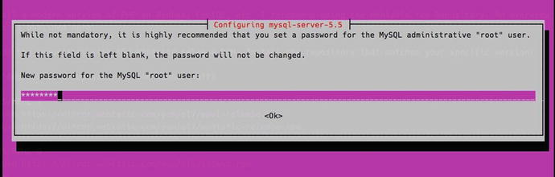

Before you start diving into Lumen, you need to make sure PHP is installed. You’ll also need a few other tools to develop a real application. You can get PHP a number of ways, but here is my recommendation for all platforms: Laravel Homestead (laravel.com/docs/homestead). I also include a few different ways to install PHP locally if you are interested, but the book examples will use Homestead. I highly encourage using Homestead to work through this book.
To work through the applications in this book, you will need
- PHP >= 5.5.9, as well as a few PHP extensions
- Composer
- MySQL Database
Homestead comes with a modern version of PHP called Composer (
https://getcomposer.org/
), and a few database options, so you don’t need to worry about the requirements if you are using Homestead; if you are not using Homestead, you will need >= PHP 5.5.9 as outlined by the Lumen installation instructions (
https://lumen.laravel.com/docs/5.2/installation#installation
).
The last thing on the list is a database. Lumen can be configured to use different databases including MySQL, SQLite, PostgreSQL, or SQL Server. We will use MySQL (any MySQL variant will do) for this book. MySQL is the default database connection in the Lumen Framework database configuration (
https://github.com/laravel/lumen-framework/blob/5.2/config/database.php
) so we will stick with the convention.
Homestead
Laravel Homestead is the best development environment choice because it provides a complete development environment for all your Laravel and Lumen projects. Homestead provides some solid benefits for your development environment as well, including the following:
- Isolated environment on a virtual machine
- Works on Windows, Mac, and Linux
- Easily configure all your projects in one place
As mentioned in the introduction, Homestead requires Vagrant (
www.vagrantup.com/
) and VirtualBox (
www.virtualbox.org/
) so you will need to install both. Follow the installation instructions (
https://lumen.laravel.com/docs/5.2/installation#installation
) to finish setting up Homestead.
Once you complete the installation instructions you should be able to run the vagrant ssh command within the Homestead project and successfully ssh into your Homestead virtual machine. You will revisit Homestead to set up your sample application in Chapter 2, and then you will set up another application in Chapter 3 that you will work on throughout the remainder of the book.
When the install instructions instruct you to clone the Homestead git repository, I encourage you to clone it to ∼/Code/Homestead to follow along with the book, or you can adapt the examples to match whatever you pick (see Listing 1-1).
$ mkdir -p ∼/Code
$ git clone https://github.com/laravel/homestead.git Homestead
Listing 1-1.
Cloning the Homestead Project to ∼/Code/Homestead
Once you finish the Homestead installation instructions you should be able to ssh into the virtual machine (Listing 1-2).
$ cd ∼/Code/Homestead
$ vagrant ssh
Welcome to Ubuntu 14.04.3 LTS (GNU/Linux 3.19.0-25-generic x86_64)
* Documentation: https://help.ubuntu.com/
Last login: Tue Feb 2 04:48:52 2016 from 10.0.2.2
vagrant@homestead:∼$
Listing 1-2.
SSH Into Homestead
You can type “exit” or press Control+D to exit the virtual machine. The homestead repository will be at ∼/Code/Homestead and this is the path you will use in this book for your applications. I encourage you to review the Homestead.yaml file at ∼/.homestead/Homestead.yaml after you finish installing Homestead. Once you get Homestead installed, you can skip ahead to Chapter 2. See you in the next section!
Optional Local Instructions
The following sections offer information if you are interested in running PHP locally, so feel free to skip them. I cannot guarantee these instructions, but for the most part they should work for you.
Mac OSX
If you want to develop locally on OS X, I recommend using Homebrew (
http://brew.sh/
) to install PHP and MySQL. The PHP installation that ships with OS X will probably suffice, but I will show you how to install PHP with Homebrew instead of dealing with the different versions of PHP that ship with different versions of OS X.
To install packages with Homebrew, you will need Xcode developer tools and the Xcode command line tools. XCode is a rather large download—I’ll be waiting for you right here.
Once you have Xcode, follow the installation instructions (
http://brew.sh/#install
) on Homebrew’s site. Next, you need to tell brew about “homebrew-php” so you can install PHP 5.6 (Listing 1-3).
$ brew tap homebrew/dupes
$ brew tap homebrew/versions
$ brew tap homebrew/homebrew-php
$ brew install php56 php56-xdebug
Listing 1-3.
Tap homebrew-php
Once the installation finishes, verify that you have the right version of PHP in your path (Listing 1-4).
$ php --version
PHP 5.6.16 (cli) (built: Dec 7 2015 10:06:24)
Copyright (c) 1997-2015 The PHP Group
Zend Engine v2.6.0, Copyright (c) 1998-2015 Zend Technologies
Listing 1-4.
Verifying PHP
Next, you need to install the MySQL database server with Homebrew (Listing 1-5).
$ brew install mysql
Listing 1-5.
Installing MySQL with Homebrew
Once the MySQL installation is finished, make sure you can connect to the database server (Listing 1-6).
$ mysql -u root
Welcome to the MySQL monitor. Commands end with ; or \g.
Your MySQL connection id is 3795
Server version: 5.6.26 Homebrew
...
mysql>
Listing 1-6.
Connecting to MySQL
I highly recommend updating the root password (
http://dev.mysql.com/doc/refman/5.6/en/resetting-permissions.html
) and adding another user besides root, which you will use to connect to MySQL. Although the database is local, securing MySQL is a good habit.
You can configure Apache or Nginx locally if you want to use a web server (Mac ships with Apache).
I’ll leave the rest up to you, but it should be pretty easy to get PHP and a web server going on a Mac by searching Google.
Linux
Here are simple instructions to install PHP on Unix-like systems; this section includes the most popular distributions like CentOS and Ubuntu. This is not an exhaustive set of setup instructions but it should be enough to work with Lumen.
Red Hat/CentOS
To install a modern version of PHP on Red Hat and CentOS, I recommend using the Webtatic (
https://webtatic.com/
) yum repository. First, add the repository with the Webtatic release RPM; you should use the repository that matches your specific version (Listing 1-7).
# CentOS/REHL 7
$ yum -y update
$ rpm -Uvh https://dl.fedoraproject.org/pub/epel/epel-release-latest-7.noarch.rpm
$ rpm -Uvh https://mirror.webtatic.com/yum/el7/webtatic-release.rpm
# CentOS/REHL 6
$ yum -y update
$ rpm -Uvh https://mirror.webtatic.com/yum/el6/latest.rpm
Listing 1-7.
Adding the Webtatic Repository
Next, install the following PHP packages and verify that PHP was installed properly (Listing 1-8).
$ yum install \
php56w.x86_64 \
php56w-mysql.x86_64 \
php56w-mbstring.x86_64 \
php56w-xml.x86_64 \
php56w-pecl-xdebug.x86_64
# Verify
$ php --version
PHP 5.6.16 (cli) (built: Nov 27 2015 21:46:01)
Copyright (c) 1997-2015 The PHP Group
Zend Engine v2.6.0, Copyright (c) 1998-2015 Zend Technologies
Listing 1-8.
Installing PHP Packages from Webtatic
Next, install the MySQL client and server (Listing 1-9).
$ yum install mysql-server mysql
Listing 1-9.
Installing MySQL on REHL
Once MySQL is installed, you should set a root password (Listing 1-10).
$ /usr/bin/mysql_secure_installation
Listing 1-10.
Securing the MySQL Installation
Follow the prompts and you should be all set!
Debian/Ubuntu
On Debian systems I recommend using the php5-5.6 PPA (
https://launchpad.net/~ondrej/+archive/ubuntu/php5-5.6
) from Ondrej Surý (
https://launchpad.net/~ondrej
) or the PHP 7 version of the same PPA. Installation of the PPA varies slightly between different versions. Most of the steps will remain the same, but the following are the steps for Ubuntu 14.04 and Ubuntu 12.04.
First, install a couple dependencies needed to add the PPA. If you are using Ubuntu 14.04, see Listing 1-11.
$ apt-get install -y language-pack-en-base
$ apt-get install -y software-properties-common --no-install-recommends
$ LC_ALL=en_US.UTF-8 add-apt-repository ppa:ondrej/php5-5.6
Listing 1-11.
Installing Dependencies Needed and the PPA on Ubuntu 14.04
If you are using Ubuntu 12.04, run the code in Listing 1-12 instead.
$ apt-get install -y language-pack-en-base
$ apt-get install -y python-software-properties --no-install-recommends
$ LC_ALL=en_US.UTF-8 add-apt-repository ppa:ondrej/php5-5.6
Listing 1-12.
Installing Dependencies and the PPA on Ubuntu 12.04
Note that non-UTF-8 locales will not work (
https://github.com/oerdnj/deb.sury.org/issues/56
) at the time of writing. Next, update and install the required packages and verify; the commands are the same for Ubuntu 14.04 and 12.04 (Listing 1-13).
$ apt-get update
$ apt-get install -y \
php5 \
php5-mysql \
php5-xdebug
# Verify
$ php --version
PHP 5.6.16-2+deb.sury.org∼precise+1 (cli)
Copyright (c) 1997-2015 The PHP Group
Zend Engine v2.6.0, Copyright (c) 1998-2015 Zend Technologies
with Zend OPcache v7.0.6-dev, Copyright (c) 1999-2015, by Zend Technologies
Listing 1-13.
Updating and Installing Packages
Next, install MySQL server and client packages, make the MySQL service start on boot, and start the service manually (Listing 1-14).
$ apt-get install \
mysql-server \
mysql-client
$ sudo update-rc.d mysql defaults
$ sudo service mysql start
Listing 1-14.
Installing MySQL Packages on Ubuntu
During the installation of the mysql-server package you should be prompted to update the root password, which will look similar to Figure 1-1.

Figure 1-1.
Configuring MySQL Root Password
Verify that you can connect to MySQL after you finish installing MySQL and setting a root password (Listing 1-15).
$ mysql -u root -p
Enter password:
…
mysql>
Listing 1-15.
Connecting to MySQL
At this point, you should have everything required to get through this book using the built-in PHP server on a local Ubuntu machine.
Windows
I recommend using Homestead (
http://laravel.com/docs/5.1/homestead#installation-and-setup
) to work through this book on Windows.
Conclusion
You should now have a working environment that you can use to write Lumen applications! Let’s summarize what we did in this chapter:
- Installed Vagrant and VirtualBox
- Installed the Homestead virtual machine
- Covered alternative ways of installing PHP and MySQL
I want to emphasize how easy Homestead makes getting a solid, portable development environment working with little effort. Now that you have PHP installed, it’s time to learn Lumen!